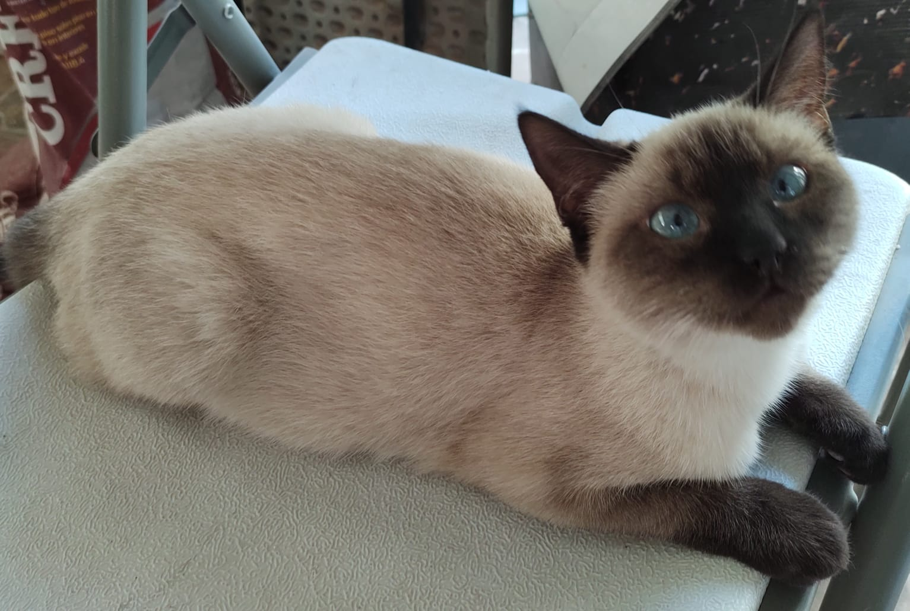

Perros
Son los mas hiperactivos de los tres, en este se incluyen razas y tamaños muy variados.

Gatos
Estos son mas calmados, ya que pasan la mayor parte del dia durmiendo.
Tortugas
Esta es una mascota ideal para las personas que no tienen mucho tiempo
ya que no necesitan la misma atencion que los otros aperte de darles comida.